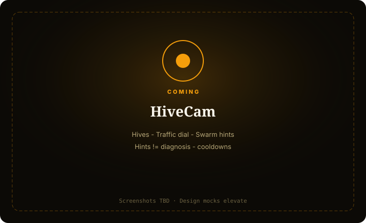

HiveCam
Apiary ops — hive traffic, swarm/health hints — a beekeeper’s yard book, not a pile counter.
For beekeepers who want traffic dials and gentle swarm awareness without panic-spam or disease claims.

What it does
HiveCam is an apiary console: Live, Hives CRM, Traffic, Automations. Traffic is an activity proxy; swarm/health are hints with generous cooldowns.
No auto-open hive / chemical / treatment actions day one. Don’t reuse YardCam pile metaphors.
Capabilities
Day-one surface vs Advanced / gated — from Clarity GH Pages pack.
Day-one surface
Live
Day oneHive face / entrance view
Hives
Day oneCRM + nicknames
Traffic
Day oneIntensity dial / chart (primary)
Automations
Day oneNotify on anomaly/swarm hint (dry-run, cooldowns)
Advanced / gated
Disease diagnosis / treatment
OutForbidden CTAs
Exact bee census gospel
OutTraffic = approx proxy
How to use it
First-run (outline)
Add feed on entrance
—
Draw/register hives
—
First traffic read proof
—
Step E
Notify me (dry-run) with cooldown awareness.
Confirm hints ≠ diagnosis
—
Daily loop (outline)
Live + Traffic dial
—
Swarm hint / sustained crash
First — not every blip.
Hives CRM notes
—
Respect cooldowns
—
Badge
Swarm hint / crash / cam — not sleeping.
Honesty / trust
Swarm/health hints ≠ diagnosis; cooldowns.
- Swarm/health = hints — never medical confirmation or mite diagnosis.
- Traffic = approx activity proxy — not exact census.
- No auto treatment / chem / open-hive actuation.
- Cooldowns on swarm hints — no panic-spam.
- Not a YardCam pile counter.
Screenshots
Screenshots TBD from Design mocks — capture when Design elevates.
Capture when Design elevates
Swarm/health hints ≠ diagnosis; cooldowns
Get started
Stub page — full elevate after Design screenshots. Honesty locks already live.